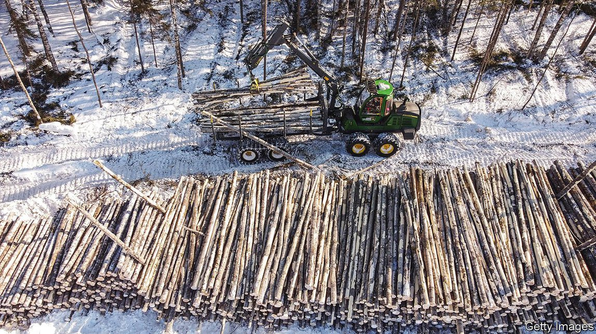
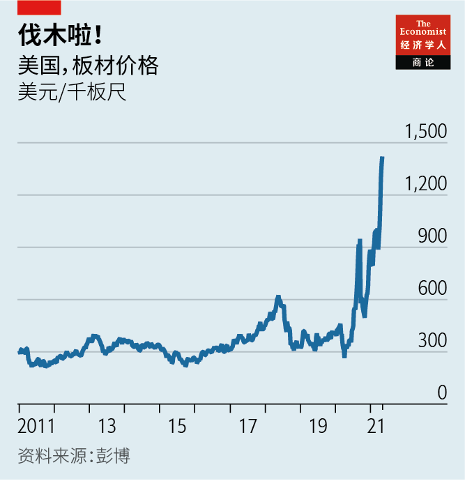
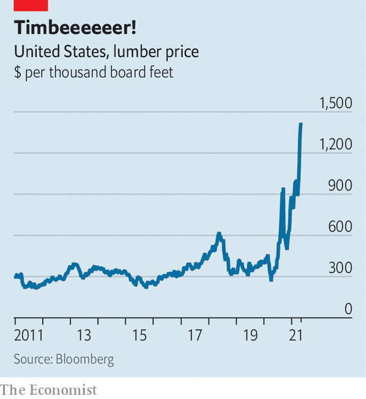

2021-05-31T14:13:50+00:00
万木争荣
木制品行业正在发生根本性的变化
树上生钱，更胜以往
在挪威最大的湖区，建筑低矮，一片田园风光，米约萨塔（Mjostarnet）在其中如鹤立鸡群。这座2019年完工的建筑高85米，内有公寓、写字楼和酒店，是挪威第三高的大楼。它是世界上最高的木结构建筑。类似的木结构建筑在其他国家也不断涌现。而在更多地方，人们是在现有建筑上添加了木结构部分，这种结构的重量约是钢筋混凝土对等结构的五分之一，因此损坏下方建筑的风险更小。
在钢铁、混凝土和塑料风行了一个世纪后，米约萨塔成为木材卷土重来的傲人范例。从2000年至2019年，全球林产品（包括锯木、纸浆和纸张）出口增长了68%，达到2440亿美元。受到DIY大行其道的推动，对木材的需求像参天大树一样直冲云霄。在过去10年的大部分时间里，1英寸厚1000平方英尺的板材价格一直在200美元到400美元之间波动，而现在已经超过1400美元，木材生产商的股价也随之拉高。许多像惠好（Weyerhaeuser）这样的大型木材生产商的股票市值过去一年几乎翻了一番；惠好这家美国巨头的市值现在达到300亿美元。
蒙特利尔银行（Bank of Montreal）的马克·王尔德（Mark Wilde）预计将有更多企业顺势加入这个行业。它们将不同于传统的木材生产商，因为这个行业也在经历根本性的变化。
首先是过去15年到20年间对商业印刷的需求崩塌。这导致了造纸业的整合。许多造纸厂已转而生产包装材料——消费者因为担心塑料对环境的影响，变得更偏好纸质包装。一些欧洲大型木材公司，比如芬兰的Metsa，已不再生产印刷纸张（它仍在生产硬纸板和纸巾）。在今年关闭了两家工厂后，同样来自芬兰的斯道拉恩索公司（Stora Enso）从生产印刷纸张获得的收入将占10%，远低于十年前的70%。剩下的收入将主要来自纸浆、包装和纤维制品。
第二个相关的变化是因技术发展而出现的多样化。除了销售板材，大多数工厂已经在生产木制品。在现代化工厂里，锯木设备把一棵树的四分之三锯成板材，剩下的切成薄片，可以用来制作木质复合材料。因为林业要顺应森林数十年的生命周期，所以这种面世已有40年的“削片锯木联合”技术到现在才得以广泛应用。它在直径25厘米的树木上效果最好，而传统的带锯机适用于直径40厘米的树木。这样一来，林场主就能比过去提前20年到30年出售林木，或者加工它们——如果他们和木材厂垂直整合了的话。
采伐效率提高了，再加上现在有了更先进的技术，木制品的范围得以扩大。Metsa正在将废弃的木质素——一种决定树木刚性的天然聚合物——转化为做服装和装饰材料用的纺织品。芬兰另一家公司芬欧汇川（UPM）已经找到了将“黑液”（造纸过程中留下的黏液）转化为生物燃料和其他化学品的方法。该公司明年将在德国开设一家全球前所未见的精炼厂。它已经在用木质纳米纤维生产伤口敷料和细胞培养基，和琼脂凝胶竞争。业内还有人在谈论要攀爬到价值链的上端，介入规划和设计。等到木材价格大幅回落时，所有这些就会构成一个好用的脚手架。
2021-05-31T14:13:50+00:00
Forest bump
The wood-products industry is undergoing root-and-branch change
Ever more money grows on trees
IN THE BUCOLIC low-rise surroundings of Norway’s biggest lake, Mjostarnet stands out. At 85 metres tall, this building of flats, offices and a hotel, completed in 2019, is Norway’s third-tallest. It is the highest in the world built of wood. Similar structures have sprung up in other countries. So, in many more places, have wooden additions to existing buildings, which weigh around a fifth of what an equivalent steel-and-concrete one would, and therefore risk less damage to the building below.
Mjostarnet stands as a proud example of wood’s comeback after a century of steel, concrete and plastic. Global exports of forest products, including sawn wood, pulp and paper, grew by 68% between 2000 and 2019, to $244bn. Demand is reaching redwood-like heights, fertilised by a pandemic DIY boom. Having ranged between $200 and $400 for much of the past decade, the price of 1,000 square feet of one-inch-thick timber has exceeded $1,400—and hoisted the share prices of wood producers up with it. The stockmarket value of many big ones such as Weyerhaeuser has roughly doubled in the past year; the American giant is now worth $30bn.
Mark Wilde of the Bank of Montreal expects more saw mills to come online in response. They will be different to those of the past, for the industry is also undergoing root-and-branch changes.
The first is the collapse in demand for commercial printing over the past 15-20 years. This has led to consolidation in paper production. Many paper mills have been converted to manufacture packaging, preferred by consumers who worry about plastic’s environmental impact. Some big European wood firms, such as Metsa of Finland, have abandoned print paper (it still makes cardboard and tissues). After shutting two mills this year, Stora Enso, which is also Finnish, will derive 10% of revenue from print paper, down from 70% a decade ago. The rest will come mainly from pulp, packaging and fibre products.
The second, related change is technology-enabled diversification. Most mills already manufacture wood products on top of selling lumber. In modern ones, saws slice three-quarters of a tree into planks, and chop the rest into chips that can be turned into wood-based composites. Because the forest business reflects the decades-long sylvan lifecycle, this 40-year-old “chip-n-saw” technique is only now enjoying widespread adoption. It works best on trees with a diameter of 25cm, compared with 40cm for traditional bandsaws, and so lets forest owners sell or, if they are vertically integrated with mills, use their trees 20-30 years earlier than in the past.
Greater harvesting efficiency is now combining with newer techniques to expand the range of wood products. Metsa is turning waste lignin, a natural polymer which gives trees their rigidity, into textiles for clothing and furnishings. UPM, another Finnish company, has worked out how to turn “black liquor”, a gloop left over from paper manufacturing, into biofuels and other chemicals. It will open a refinery in Germany—the first of its kind anywhere—next year. It is already making wound dressings and a cell-culture medium from wood nanofibres to rival agar jelly. There is talk of climbing higher up the value chain to planning and design. All this will prove a handy scaffold when lumber prices come back down to earth. ■
2021-05-31T14:13:50+00:00
萬木爭榮
木製品行業正在發生根本性的變化
樹上生錢，更勝以往
在挪威最大的湖區，建築低矮，一片田園風光，米約薩塔（Mjostarnet）在其中如鶴立雞群。這座2019年完工的建築高85米，內有公寓、寫字樓和酒店，是挪威第三高的大樓。它是世界上最高的木結構建築。類似的木結構建築在其他國家也不斷湧現。而在更多地方，人們是在現有建築上添加了木結構部分，這種結構的重量約是鋼筋混凝土對等結構的五分之一，因此損壞下方建築的風險更小。
在鋼鐵、混凝土和塑料風行了一個世紀後，米約薩塔成為木材捲土重來的傲人範例。從2000年至2019年，全球林產品（包括鋸木、紙漿和紙張）出口增長了68%，達到2440億美元。受到DIY大行其道的推動，對木材的需求像參天大樹一樣直衝雲霄。在過去10年的大部分時間裡，1英寸厚1000平方英尺的板材價格一直在200美元到400美元之間波動，而現在已經超過1400美元，木材生產商的股價也隨之拉高。許多像惠好（Weyerhaeuser）這樣的大型木材生產商的股票市值過去一年幾乎翻了一番；惠好這家美國巨頭的市值現在達到300億美元。
蒙特利爾銀行（Bank of Montreal）的馬克·王爾德（Mark Wilde）預計將有更多企業順勢加入這個行業。它們將不同於傳統的木材生產商，因為這個行業也在經歷根本性的變化。
首先是過去15年到20年間對商業印刷的需求崩塌。這導致了造紙業的整合。許多造紙廠已轉而生產包裝材料——消費者因為擔心塑料對環境的影響，變得更偏好紙質包裝。一些歐洲大型木材公司，比如芬蘭的Metsa，已不再生產印刷紙張（它仍在生產硬紙板和紙巾）。在今年關閉了兩家工廠後，同樣來自芬蘭的斯道拉恩索公司（Stora Enso）從生產印刷紙張獲得的收入將佔10%，遠低於十年前的70%。剩下的收入將主要來自紙漿、包裝和纖維製品。
第二個相關的變化是因技術發展而出現的多樣化。除了銷售板材，大多數工廠已經在生產木製品。在現代化工廠里，鋸木設備把一棵樹的四分之三鋸成板材，剩下的切成薄片，可以用來製作木質複合材料。因為林業要順應森林數十年的生命周期，所以這種面世已有40年的“削片鋸木聯合”技術到現在才得以廣泛應用。它在直徑25厘米的樹木上效果最好，而傳統的帶鋸機適用於直徑40厘米的樹木。這樣一來，林場主就能比過去提前20年到30年出售林木，或者加工它們——如果他們和木材廠垂直整合了的話。
採伐效率提高了，再加上現在有了更先進的技術，木製品的範圍得以擴大。Metsa正在將廢棄的木質素——一種決定樹木剛性的天然聚合物——轉化為做服裝和裝飾材料用的紡織品。芬蘭另一家公司芬歐匯川（UPM）已經找到了將“黑液”（造紙過程中留下的黏液）轉化為生物燃料和其他化學品的方法。該公司明年將在德國開設一家全球前所未見的精鍊廠。它已經在用木質納米纖維生產傷口敷料和細胞培養基，和瓊脂凝膠競爭。業內還有人在談論要攀爬到價值鏈的上端，介入規劃和設計。等到木材價格大幅回落時，所有這些就會構成一個好用的腳手架。